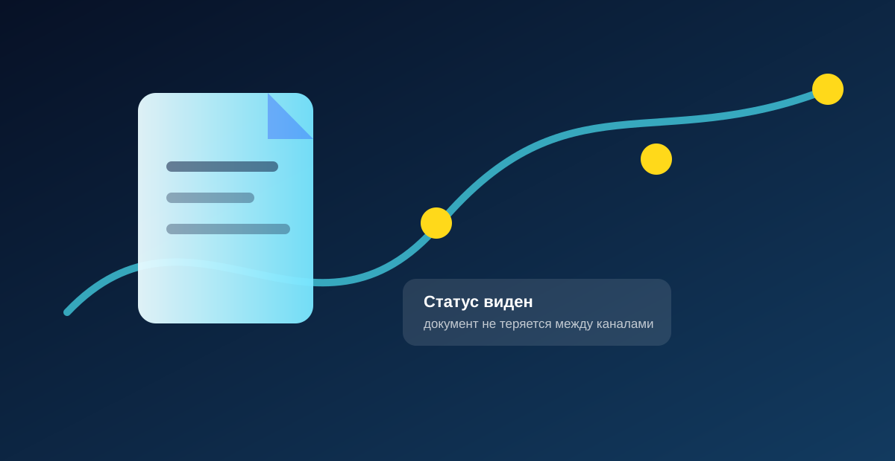

Отчетность
Saby для отчетности: что проверить перед подключением
Организации, пользователи, сроки, требования и то, кто будет отвечать за отправку.

Коротко
Материал помогает быстро понять, почему тема важна для бизнеса и что проверить у себя перед покупкой, настройкой или разговором со специалистом.
Что проверить
Если хотя бы два пункта похожи на вашу ситуацию, лучше сначала разобрать задачу, а не покупать сервис по названию.
- какая задача мешает работе сейчас;
- кто отвечает за следующий шаг;
- какие данные нужны для расчета;
- что можно запустить первым без лишнего объема.
Когда стоит обратиться
Если вы узнаете свою ситуацию и хотите понять, с чего начать, опишите задачу. Мы подскажем направление и состав первого шага.